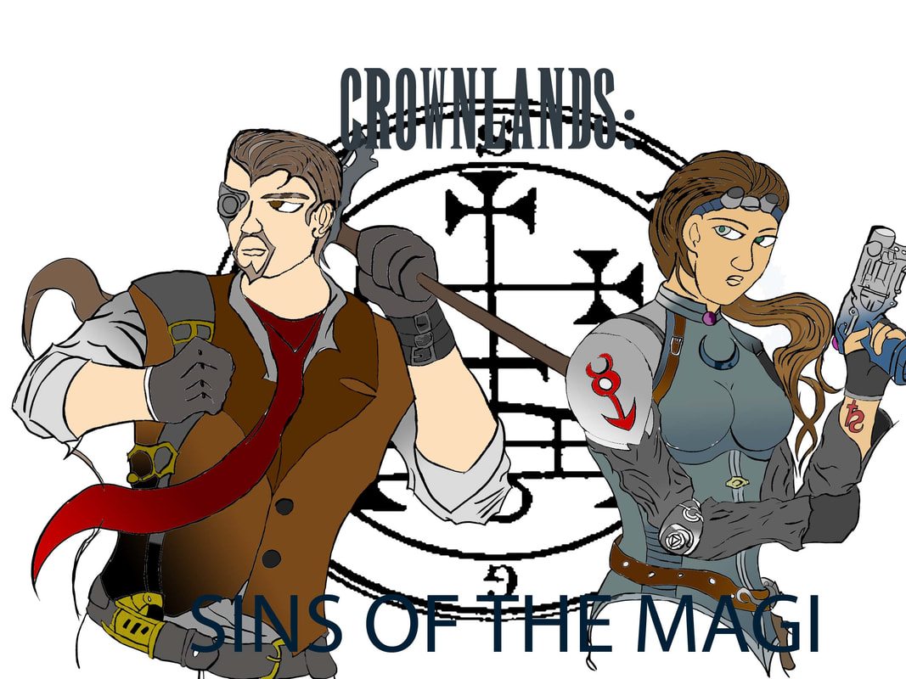
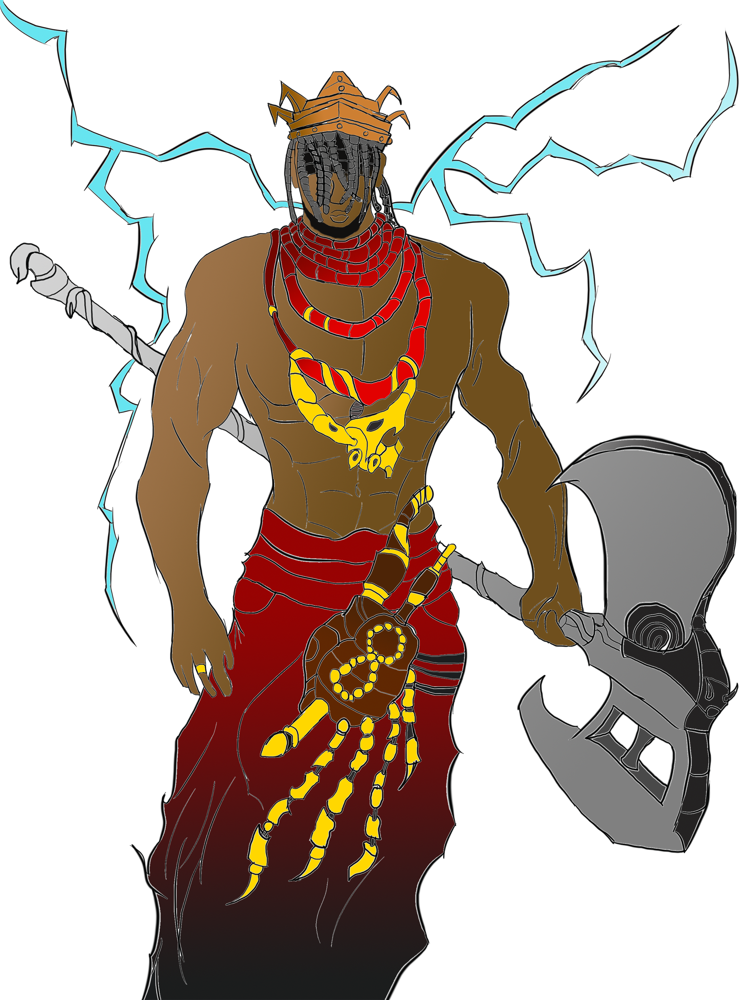

UMBRAL SIREN
Book One of The Compendium of the Astral
A VENGEFUL SOUL RETURNS FROM EXILE.
A MALEVOLENT POWER MANIFESTS.
THE VESTIGES OF REALITY DETERIORATE...
In a remote town within the far south of rural Maine, Malakai returns from exile after witnessing a mob of townspeople murder his mother and father years ago. Plagued by the trauma of his family's death, Malakai has developed extraordinary psychic powers allowing him to control thoughts. This allows him to make contact with an ancient spiritual power that threatens to manifest once more. Malakai has sensed the presence of nine strong fighters from around the town, all of whom he will have face each other to the death. Once the weak have been weeded out, nothing will stand in the way of his long-awaited vengeance.
Heavily inspired by the classic American horror works of authors such as Stephen King and Dean Koontz, and combined with elements of story-driven fighting games such as Mortal Kombat and BlazBlue, Umbral Siren is an ambitious psychological story filled with the intertwining plots of a diverse array of characters - all coming after Malakai and the power he possesses for their own reasons.
Read an extract from Umbral Siren
Sins of the Magi
Book One of the Crownlands Trilogy

A resident of Vienna, Austria-Hungary, Simon Devereaux is a young and decorated private detective of the Herengasse Police Department. An earnest but arrogant man at the top of his field, Simon appears to be no more than the average crime investigator. One day, while on an assignment, Simon gets attacked by a masked assassin. On the brink of what looks to be certain death, Simon is saved by a mysterious woman in black by the name of Karin Varada. Her battle prowess beyond reason or doubt, Karin is a young witch belonging to an ancient order of powerful witches known as the Circle of Olori.
Caught in a web of political intrigue beyond his understanding, Simon is forced head-long into a Noir-inspired thriller that combines 20th century pulp literature with supernatural occult horror, set within the early industrialized colonial period of World-War-One-Era Europe.
The wheel of the future has begun to turn.
And the story of the Astral - that of Simon and the mysterious woman Karin is about to begin.
Pantheon Flights
Book One of the Prime Covenant Trilogy

Two divine forces wage a war across dimensions disrupting countless worlds from fulfilling their purposes. To end this conflict, agents working for the Orishas are sent in to try to end the disturbance from behind the scenes and find the root cause of how it could have happened in the first place.
The first in the Prime Covenant series, Pantheon Flights is an epic space-opera that combines vast and large-scale sci-fi with West African cosmology and spirituality into a timeless tale full of cosmic action, adventure, larger-than-life heroes and powerful adversaries.